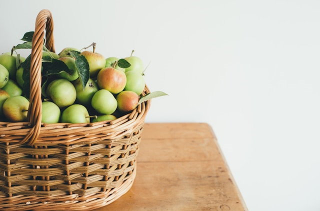

Invest in stickers
Yes, honestly. Stick or label everything. You want to keep track of purchase dates, open dates and use by dates.

Put fresh produce in baskets
Not only does it look incredibly inviting seeing a fruit bowl on someones table, it also brings color to a room. As an added bonus, it also makes adding that extra bit of fruit into your day a lot easier.